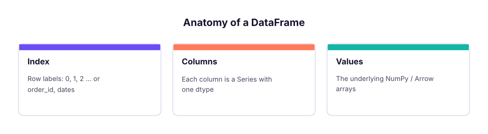

pandas I: Series, DataFrames, Reading Data, Selecting and Filtering
Meet the most-used data library. Create Series and DataFrames, read CSV and Excel files, inspect data with head, info and describe, select columns and rows with loc and iloc, filter with conditions and query, sort, add columns and save results, using the Superstore sales data.
- Create Series and DataFrames and explain the index
- Read CSV and Excel files with the right options and write results back out
- Inspect a dataset with shape, dtypes, head, info, describe and value_counts
- Select with [], loc and iloc and filter rows with boolean conditions, isin, between and query
- Sort, rank, add and rename columns, and avoid the SettingWithCopy pitfall
Series and DataFrame
pandas gives Python spreadsheet-like tables. A Series is one labelled column; a DataFrame is a table of Series sharing one index (row labels).

import pandas as pd, numpy as np
pd.set_option("display.max_columns", 20); pd.set_option("display.width", 160) # show wide tables in full
s = pd.Series([120, 95, 140], index=["North", "South", "East"], name="sales")
print(s, s["South"], s.max(), s.idxmax(), sep="\n")
df = pd.DataFrame({"city": ["Pune", "Delhi", "Kochi"], "sales": [120, 95, 140], "target": [100, 110, 130]})
df["hit"] = df["sales"] >= df["target"]
print(df)
print(df.shape, list(df.columns), df.index, df.dtypes.to_dict(), pd.__version__)North 120
South 95
East 140
Name: sales, dtype: int64
95
140
East
city sales target hit
0 Pune 120 100 True
1 Delhi 95 110 False
2 Kochi 140 130 True
(3, 4) ['city', 'sales', 'target', 'hit'] RangeIndex(start=0, stop=3, step=1) {'city': <StringDtype(na_value=nan)>, 'sales': dtype('int64'), 'target': dtype('int64'), 'hit': dtype('bool')} 3.0.5Reading data
s = pd.read_csv("superstore_sales.csv", parse_dates=["order_date", "ship_date"])
print(s.shape)
print(s.head(3).T)(6323, 19)
0 1 2
row_id 1 2 3
order_id IN-2023-00001 IN-2023-00001 IN-2023-00001
order_date 2023-01-01 00:00:00 2023-01-01 00:00:00 2023-01-01 00:00:00
ship_date 2023-01-05 00:00:00 2023-01-05 00:00:00 2023-01-05 00:00:00
ship_mode Second Class Second Class Second Class
customer_id C0765 C0765 C0765
customer_name Ishaan Gupta Ishaan Gupta Ishaan Gupta
segment Consumer Consumer Consumer
city Bengaluru Bengaluru Bengaluru
state Karnataka Karnataka Karnataka
region South South South
product_id P0059 P0050 P0011
category Technology Office Supplies Furniture
sub_category Phones Appliances Tables
product_name Nova Phone 223 Orbit Appliance 798 Orbit Table 248
sales 36000.0 3850.0 62080.0
quantity 2 1 4
discount 0.0 0.0 0.0
profit 3472.55 1169.54 6044.47| Option | Use |
|---|---|
sep=";" |
Other delimiters ("\t" for TSV) |
usecols=[...] |
Read only some columns (faster, less memory) |
dtype={"pin": str} |
Keep leading zeros and IDs as text |
parse_dates=[...] |
Convert date columns |
na_values=["NA", "-"] |
Extra markers for missing |
nrows=1000, chunksize=100_000 |
Sample or stream big files |
encoding="latin-1" |
Fix decode errors in older files |
Other readers: pd.read_excel("file.xlsx", sheet_name="Sales") (needs openpyxl), pd.read_json, pd.read_parquet, pd.read_sql (Lesson 23), pd.read_html, pd.read_clipboard.
Inspecting data
Run these five on every new dataset:
print(s.info(memory_usage="deep"))<class 'pandas.DataFrame'> RangeIndex: 6323 entries, 0 to 6322 Data columns (total 19 columns): # Column Non-Null Count Dtype --- ------ -------------- ----- 0 row_id 6323 non-null int64 1 order_id 6323 non-null str 2 order_date 6323 non-null datetime64[us] 3 ship_date 6323 non-null datetime64[us] 4 ship_mode 6323 non-null str 5 customer_id 6323 non-null str 6 customer_name 6323 non-null str 7 segment 6323 non-null str 8 city 6323 non-null str 9 state 6323 non-null str 10 region 6323 non-null str 11 product_id 6323 non-null str 12 category 6323 non-null str 13 sub_category 6323 non-null str 14 product_name 6323 non-null str 15 sales 6323 non-null float64 16 quantity 6323 non-null int64 17 discount 6323 non-null float64 18 profit 6323 non-null float64 dtypes: datetime64[us](2), float64(3), int64(2), str(12) memory usage: 1.6 MB None
print(s.describe(include="number").round(1).T)
print(s["region"].value_counts(), s["category"].value_counts(normalize=True).round(3), sep="\n")
print(s["customer_id"].nunique(), "customers |", s["order_date"].min().date(), "to", s["order_date"].max().date())
print(s.isna().sum().sum(), "missing cells |", s.duplicated().sum(), "duplicate rows")count mean std min 25% 50% 75% max row_id 6323.0 3162.0 1825.4 1.0 1581.5 3162.0 4742.5 6323.0 sales 6323.0 31854.1 60414.2 42.0 1564.0 8430.0 32592.0 619290.0 quantity 6323.0 2.6 1.6 1.0 1.0 2.0 3.0 7.0 discount 6323.0 0.1 0.1 0.0 0.0 0.0 0.2 0.4 profit 6323.0 2902.4 11002.0 -75873.8 -17.9 266.3 2270.1 149424.9 region South 1656 West 1614 North 1530 East 1523 Name: count, dtype: int64 category Office Supplies 0.398 Furniture 0.303 Technology 0.299 Name: proportion, dtype: float64 785 customers | 2023-01-01 to 2025-12-31 0 missing cells | 0 duplicate rows
Selecting columns and rows
print(s["sales"].head(3).tolist()) # one column -> Series
print(s[["order_id", "region", "sales"]].head(3)) # list of columns -> DataFrame
print(s.loc[0, "customer_name"], s.iloc[0, 6]) # loc = labels, iloc = positions
print(s.loc[0:2, "region":"product_id"]) # loc slices INCLUDE the end label
print(s.iloc[0:2, 10:12]) # iloc slices EXCLUDE the end, like Python[36000.0, 3850.0, 62080.0]
order_id region sales
0 IN-2023-00001 South 36000.0
1 IN-2023-00001 South 3850.0
2 IN-2023-00001 South 62080.0
Ishaan Gupta Ishaan Gupta
region product_id
0 South P0059
1 South P0050
2 South P0011
region product_id
0 South P0059
1 South P0050| Tool | Selects by | Example |
|---|---|---|
df["col"] / df[["a","b"]] |
Column names | s["sales"] |
df.loc[rows, cols] |
Labels and boolean masks | s.loc[s.profit < 0, ["order_id", "profit"]] |
df.iloc[rows, cols] |
Integer positions | s.iloc[:5, :3] |
df.at[r, c] / df.iat[i, j] |
One value, fast | s.at[0, "sales"] |
Filtering rows
loss = s[s["profit"] < 0]
print(len(loss), "loss-making lines")
tech_south = s[(s["category"] == "Technology") & (s["region"] == "South")] # & | ~ need brackets
print(len(tech_south), round(tech_south["sales"].sum() / 1e6, 2), "M")
print(s[s["city"].isin(["Pune", "Kochi"])]["city"].value_counts().to_dict())
print(len(s[s["discount"].between(0.1, 0.2)]), len(s[s["product_name"].str.contains("Chair")]))
print(s.query("region == 'West' and sales > 50000 and discount == 0")[["order_id", "sales"]].head(3))
big = 50000
print(len(s.query("sales > @big"))) # @ refers to a Python variable1682 loss-making lines
495 41.89 M
{'Pune': 529, 'Kochi': 417}
1943 493
order_id sales
7 IN-2023-00003 69280.0
22 IN-2023-00013 72000.0
98 IN-2023-00051 64450.0
1126Sorting and ranking
top = s.sort_values("sales", ascending=False)[["order_id", "product_name", "sales"]].head(5)
print(top)
print(s.sort_values(["region", "profit"], ascending=[True, False]).groupby("region").head(1)[["region", "product_name", "profit"]])
print(s.nlargest(3, "profit")[["product_name", "profit"]], s.nsmallest(2, "profit")[["product_name", "profit"]], sep="\n") order_id product_name sales
3669 IN-2024-01857 Orbit Copier 746 619290.0
2087 IN-2024-01040 Vertex Copier 262 551530.0
1142 IN-2023-00564 Vertex Copier 262 551530.0
5696 IN-2025-02880 Orbit Copier 746 530820.0
1653 IN-2023-00809 Orbit Copier 746 526396.5
region product_name profit
4219 East Orbit Copier 746 135564.21
3669 North Orbit Copier 746 149424.89
3893 South Apex Copier 347 107757.96
481 West Zenith Copier 719 95485.58
product_name profit
3669 Orbit Copier 746 149424.89
4219 Orbit Copier 746 135564.21
3893 Apex Copier 347 107757.96
product_name profit
5979 Orbit Copier 746 -75873.84
639 Pioneer Copier 366 -67392.75Adding, changing and removing columns
e = pd.read_csv("employees_small.csv", parse_dates=["join_date"])
e["bonus"] = e["salary"] * 0.1 # vectorised arithmetic
e["band"] = np.where(e["salary"] >= 100000, "Senior", "Standard") # IF
e["grade"] = pd.cut(e["salary"], bins=[0, 70000, 100000, np.inf], labels=["C", "B", "A"]) # bins
e["tenure_yrs"] = ((pd.Timestamp("2025-10-27") - e["join_date"]).dt.days / 365.25).round(1)
e = e.assign(name_upper=e["name"].str.upper()).rename(columns={"rating": "perf"}).drop(columns=["name_upper"])
e["salary_rank"] = e["salary"].rank(ascending=False, method="dense").astype(int)
print(e.head(6))emp_id name department city join_date salary perf bonus band grade tenure_yrs salary_rank 0 E101 Kavya Iyer HR Mumbai 2016-02-28 97000 4 9700.0 Standard B 9.7 8 1 E102 Imran Reddy Finance Delhi 2019-12-14 157000 3 15700.0 Senior A 5.9 1 2 E103 Harpreet Kulkarni Finance Mumbai 2024-10-05 131000 4 13100.0 Senior A 1.1 4 3 E104 Diya Iyer HR Bengaluru 2024-01-02 90000 4 9000.0 Standard B 1.8 9 4 E105 Simran Iyer HR Bengaluru 2017-08-03 139000 4 13900.0 Senior A 8.2 3 5 E106 Saanvi Rao HR Delhi 2025-02-18 83000 4 8300.0 Standard B 0.7 10
sub = df[df.x > 0]; sub["y"] = 1 may warn because sub might be a view. Use df.loc[df.x > 0, "y"] = 1 to change the original, or sub = df[df.x > 0].copy() for an independent table. pandas 3 makes copy-on-write the default, which removes the ambiguity.
Saving results
out = s.groupby("region", as_index=False)["sales"].sum()
out.to_csv("region_sales.csv", index=False)
print(open("region_sales.csv").read())
import os; os.remove("region_sales.csv")region,sales East,46484119.0 North,49018161.0 South,53952768.5 West,51958520.5
Also: to_excel("out.xlsx", sheet_name="Summary", index=False), to_parquet (fast, typed, compressed), to_json(orient="records"), to_sql.
pandas vs Excel vs SQL
| Task | Excel | SQL | pandas |
|---|---|---|---|
| Filter | AutoFilter | WHERE |
df[df.x > 5] / query |
| New column | Formula | SELECT a*b AS c |
df["c"] = df.a * df.b |
| Sort | Sort | ORDER BY |
sort_values |
| Lookup | XLOOKUP | JOIN |
merge (Lesson 18) |
| Pivot | PivotTable | GROUP BY |
groupby, pivot_table (Lesson 18) |
Summary
- A DataFrame is a table of Series sharing an index; read files with
read_csv/read_exceland the right options. - Inspect first:
shape,info(),describe(),value_counts(),isna().sum(),duplicated().sum(). - Select with
[](columns),loc(labels, end-inclusive) andiloc(positions, end-exclusive). - Filter with boolean masks using
&,|,~and brackets, plusisin,between,str.contains,query. - Add columns with vectorised maths,
np.where,pd.cut; use.locor.copy()to avoid SettingWithCopy issues.
1. What does s[["region", "sales"]] return?
2. Which is end-inclusive?
loc uses labels and includes the end label.3. Which filter is correct?
& with brackets around each condition.4. How do you keep leading zeros in a PIN or ID column when reading?
5. Which command shows column types and non-null counts?
describe() gives statistics.6. How do you reference a Python variable inside query?
df.query("sales > @big").(1) How many orders (unique order_id) are there? (2) Show the 5 most profitable sub-categories by total profit. (3) Filter Consumer-segment orders in 2025 with discount above 20%. (4) Add margin_pct and list the 3 lowest-margin product names among lines with sales above 20,000. (5) Save the Technology rows to tech.csv.
Show solution
print(s["order_id"].nunique())
print(s.groupby("sub_category")["profit"].sum().nlargest(5))
f = s[(s.segment == "Consumer") & (s.order_date.dt.year == 2025) & (s.discount > 0.2)]; print(len(f))
s["margin_pct"] = 100 * s.profit / s.sales
print(s[s.sales > 20000].nsmallest(3, "margin_pct")[["product_name", "margin_pct"]])
s[s.category == "Technology"].to_csv("tech.csv", index=False)Q: loc vs iloc?
loc selects by label (and boolean masks), end-inclusive; iloc selects by integer position, end-exclusive.
Q: How do you find and handle duplicates?
df.duplicated(subset=[...]).sum() to count, drop_duplicates(subset=..., keep="first") to remove, after deciding which columns define a duplicate.
Q: How do you read a file that does not fit in memory?
usecols and dtype to shrink it, chunksize to stream it, or use DuckDB/Polars/Parquet.
Practise more online
Free, trusted places to test yourself on this topic. Links open the original site in a new tab.